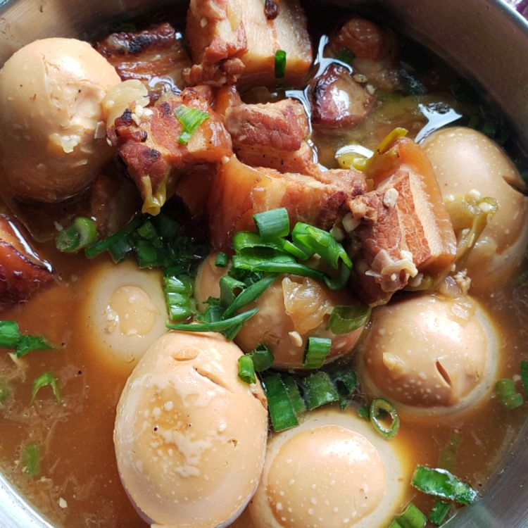

Thit Kho Tau (Caramelized Pork Belly)
Description
Thit kho tau (caramelized pork belly) is a very popular dish in Vietnamese households for everyday eating, but it's also traditionally served during Tet, the Vietnamese Lunar New Year. Serve with rice.
Ingredients
- 2 pounds pork belly, trimmed
- 2 tablespoons white sugar
- 5 shallots, sliced
- 3 cloves garlic, chopped
- 3 tablespoons fish sauce
- ground black pepper to taste
- 13 fluid ounces coconut water
- 6 hard-boiled eggs, peeled
Steps
- Slice pork belly into 1-inch pieces layered with skin, fat, and meat.
- Heat sugar in a large wok or pot over medium heat until it melts and caramelizes into a light brown syrup, about 5 minutes. Add pork and increase the heat to high. Cook and stir to render some of the pork fat, 3 to 5 minutes.
- Stir shallots and garlic into the wok. Add fish sauce and black pepper; stir until pork is evenly coated. Pour in coconut water and bring to a boil. Add hard-boiled eggs and reduce the heat to low. Cover and simmer, checking occasionally and adding a little water if the liquid evaporates too much, until pork is tender, about 1 hour.
- Remove from the heat and let stand for about 10 minutes. Skim fat from the surface of the dish.